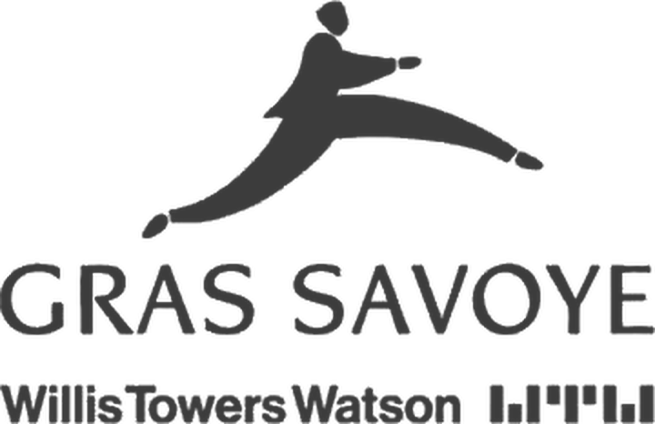

Le déploiement d’une plateforme logicielle de 2 M$, et l’analyse de données sur 4 pays.
Business Analyst, 2 ans

Le déploiement d’une plateforme logicielle de 2 M$, et l’analyse de données sur 4 pays.
Business Analyst, 2 ans
Les reportings et les tableaux de bord KPI de la direction.
Assistant chef de projet, stage
Un stage dans la formation en data science.
Stage
Taux, politique monétaire, dette souveraine et performance des fonds. Et de temps en temps, mon parcours.
Les modèles de marché et les logiciels que je construis.
Août à déc. 2025
Assistant chef de projet, stage. Reportings structurés et tableaux de bord KPI pour la direction.
Stage
Organisme de formation en data science.
2 ans
Business Analyst. Analyse de données sur 4 pays, conseil en gestion des risques, déploiement d’une plateforme logicielle de 2 M$.
2024 à 2027
Programme Grande École (Master in Management). Corporate Financial Management, électif Quantitative Finance.
Licence
Informatique et télécommunications.
Fév. 2027
Candidat
Déc. 2026
Examen planifié
Juin 2026
Obtenue
DataCamp
Obtenue
Français (langue maternelle), anglais (courant), chinois (A1).